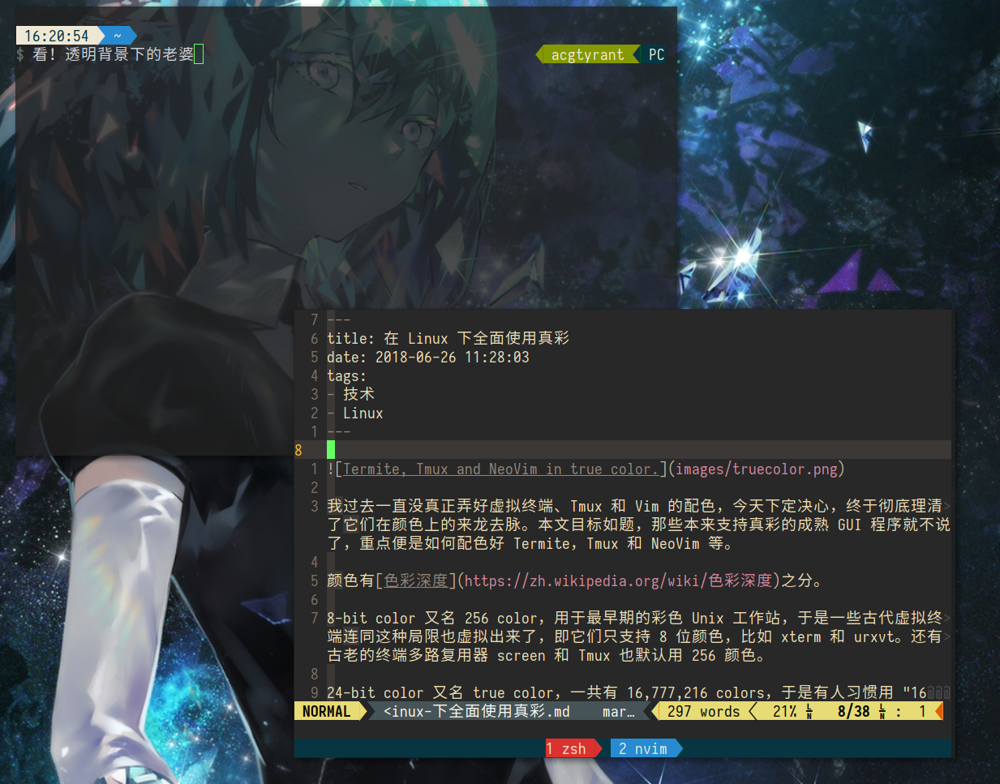

在 Linux 下全面使用真彩

我过去一直没真正弄好虚拟终端、Tmux 和 Vim 的配色，今天下定决心，终于彻底理清了它们在颜色上的来龙去脉。本文目标如题，那些本来支持真彩的成熟 GUI 程序就不说了，重点便是如何配色好 Termite，Tmux 和 NeoVim 等。
颜色有色彩深度之分。
8-bit color 又名 256 color，用于最早期的彩色 Unix 工作站，于是一些古代虚拟终端连同这种局限也虚拟出来了，即它们只支持 8 位颜色，比如 xterm 和 urxvt。还有古老的终端多路复用器 screen 和 Tmux 也默认用 256 颜色。
24-bit color 又名 true color，一共有 16,777,216 colors，于是有人习惯用 “16 million colors” 称呼它，就像先前大家有时用 256 color 称呼 8-bit color 一样。它的表示形式要么是 a 24-bit hex value (e.g. #4a32b1)，要么是 an rgba vector (e.g. rgba(16, 32, 64)。
32-bit color 基于 24-bit color 而生，增加了 8-bit 透明通道。真・现代虚拟终端 Termite 就支持，以致它的背景可以变成半透明，阿宅喜欢靠它来看 waifu。此外 Termite 还可以直接把 8-bit color 单射到 24-bit color，比如 color0 = #073642 意味着把第一个 8-bit color 映射到某 24-bit color #073642。
有个环境变量叫 TERM，contains the type of the running terminal, e.g. xterm-256color. It is used by programs running in the terminal that wish to use terminal-specific capabilities. 我猜它主要是用来告知程序当前虚拟终端支持的颜色，好让后者自动选择相应合适的颜色空间。我发现 Termite 和 Tmux 会自动设置相应的 TERM，即分别为 xterm-termite 和 screen，由此看来用户不需要手动指定 TERM 了。
不过上面既然提到了 Tmux 的 TERM 是 screen，而后者又只支持 256 color，于是得让它改用 true color，好在 Tmux 2.2 已经支持了，设置也不难。
最后的关键便是 Vim 的配色了，256 colors in vim 发表于二〇〇六年，它还把支持 256 color 的 XTerm 当成所谓的现代虚拟终端，还说若 vim 想在 256 color 虚拟终端使用 256 color colorscheme，需要在 .vimrc 显式设置 set t_Co=256，这说明 Vim 本身默认的颜色空间可能都小于 8-bit！它不愧比虚拟终端还要古老。
五年后，依云发表《让 Vim 在终端下和 GVIM 一样漂亮：gui2term.py 更新至 3.0 版》，按这篇的说法，Vim 在 256 color 虚拟终端里没法像 GVim 用 24-bit color 即 True Color ColorScheme，需要通过某脚本把 True Color ColorScheme 转换成 Vim 可加载的 256 color ColorScheme，一劳永逸解决配色问题，虽然是近似的。
如今，@NanozukiCrows 发了一条推：
折腾了下 tmux 和 vim，用上 true color 主题了。再也不用忍受 16色 256色的 vim 了，顺眼了不少
— 结夜野棠 (@NanozukiCrows) 2018年6月17日
现在用的是这个主题：gruvbox https://t.co/nXAN02kDuG pic.twitter.com/VwlhCdTrMp
就是这推促使了我彻底折腾并搞定颜色的来龙去脉。现在御用真・现代虚拟终端 Termite 本来就支持 32-bit color，御用终端多路复用器 Tmux 2.2 也支持 True Color。尽管我不清楚 Vim 对 True Color 的支持如何，但御用现代文本编辑器 NeoVim 设置 termguicolors 就可以支持了，再用任意 True Color ColorScheme，比如 Plug 'morhetz/gruvbox, colorscheme gruvbox 即可，当然，别忘了去掉 set t_Co=256 这蛋疼的古代颜色支持方案。
True Colour (16 million colours) support in various terminal applications and terminals 也科普得很棒，里面有若干 console programs 实在让人眼一亮，比如 timg 和 ls-icons，原来真彩支持好了，在虚拟终端看图像和 Icons 也不难。
Written with StackEdit.